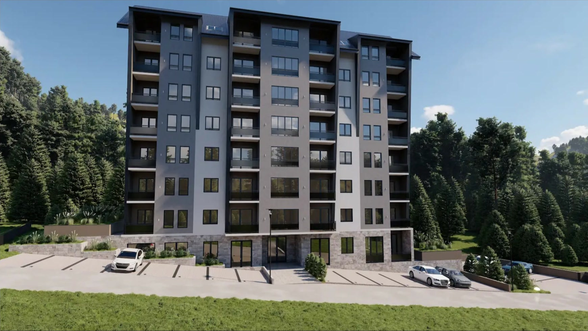
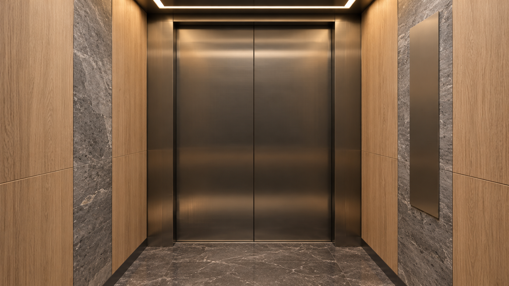

Skillset · lokacije
Izaberite
gde živite.
Kliknite na lokaciju na mapi.
Danas ·
Skrolujte ↓ do zgrade · ↑ nazad na gradnju
Zgrada iz svih uglova · skrolujte ↓ da vidite gradnju
MASSIV ressidence · Zlatibor, Bele vode
Skrolujte ↓
Vizualizacija · satelit: Esri World Imagery

MASSIV ressidence
Pređite mišem prekoDodirnite
prozore i terase.
Kliknite na ulazna vrata da uđete u zgradu.
Vizualizacija · mere su približne

P
Lift · MASSIV ressidence
Izaberite sprat.
MASSIV ressidence · stan
Osnova stana
Zakažite razgledanje ↗
Vizualizacija